Graph Analysis Report
Captured: 2026-05-05 17:51:37Graph Analysis
| Graph | Scope / Time Range | Key Values | Trend | Observations |
|---|---|---|---|---|
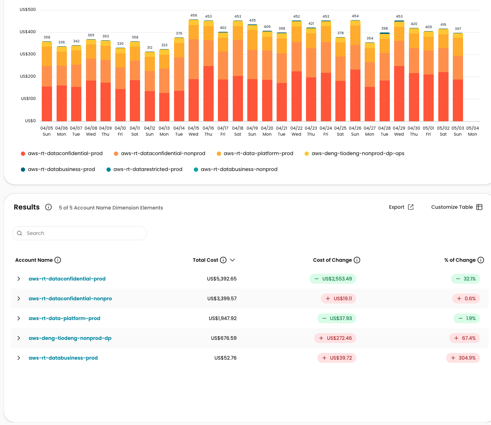 cloudzero-dashboard: AccountName & Service — Cost Centers: Works & Document; Data Foundations | Product: rdp-works | Services: S3, RDS, EFS | Last 30 days (daily, real_cost) | rdp-works, Cost Centers: Works & Document + Data Foundations; S3/RDS/EFS only; 04/05–05/04 (daily, real_cost); 5 accounts | Total 30-day: aws-rt-dataconfidential-prod $5,392.65; aws-rt-dataconfidential-nonprod $3,399.57; aws-rt-data-platform-prod $1,947.92; aws-deng-tiodeng-nonprod-dp-ops $676.59; aws-rt-databusiness-prod $52.76. Daily range $312–$456. Peak 04/15 at $456 | Mixed — dataconfidential-prod decreased −32.1%; deng-tiodeng +67.4%; databusiness-prod +304.9% | WARNING aws-deng-tiodeng-nonprod-dp-ops +67.4% cost increase warrants review. CRITICAL aws-rt-databusiness-prod +304.9% though absolute value ($52.76) is low. POSITIVE Largest account (dataconfidential-prod) reduced by −32.1% ($2,553.49 saved). |
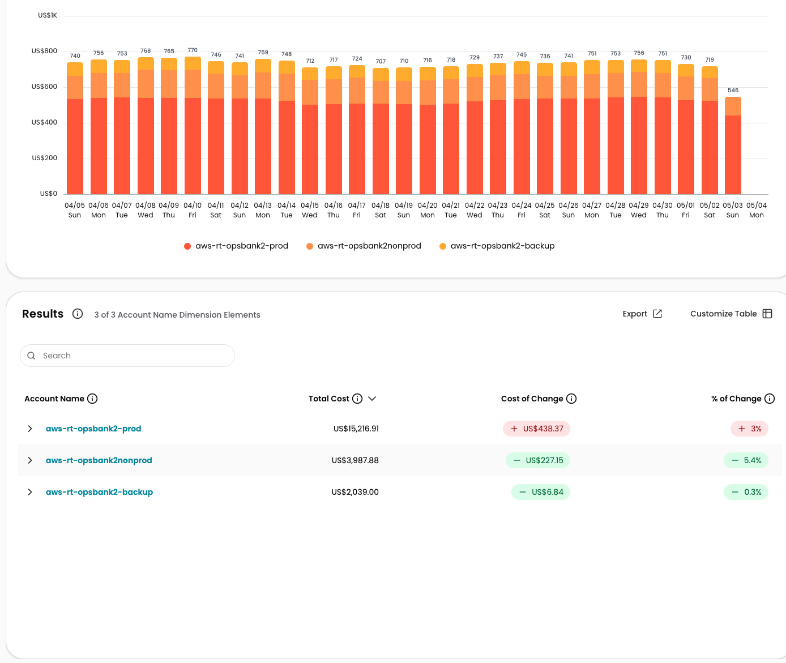 cloudzero-dashboard: AccountName & Service — Cost Center: Sources & OBII | Product: OpsBank2 (Opsbank/opsbank2 variants) | Services: S3, RDS, EFS | Last 30 days | OpsBank2 (opsbank2 variants), Cost Center: Sources & OBII; S3/RDS/EFS only; 04/05–05/04; 3 accounts | Total: aws-rt-opsbank2-prod $15,216.91 (+3%); aws-rt-opsbank2nonprod $3,987.88 (−5.4%); aws-rt-opsbank2-backup $2,039.00 (−0.3%). Daily range $546–$770 | Stable with slight decrease toward end — last day 05/04 dropped to $546 vs typical $710–$770 | POSITIVE Overall costs stable/declining. Last-day drop to $546 on 05/04 may be partial-day data — confirm before acting. |
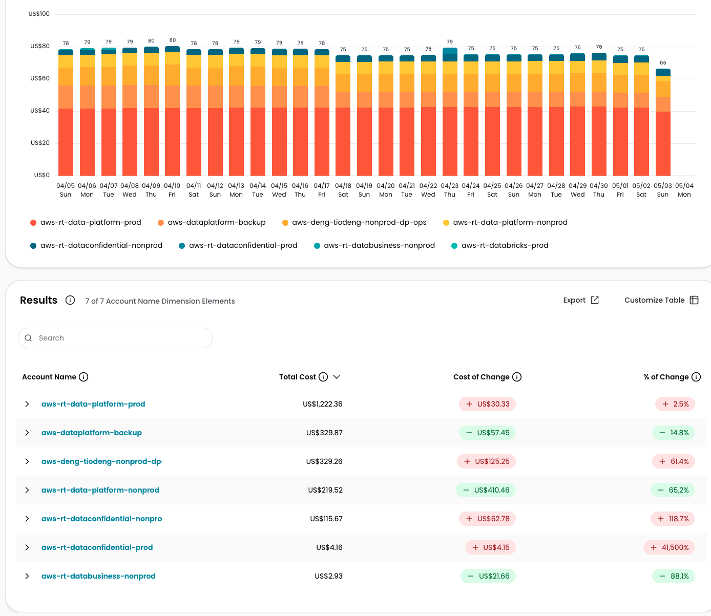 cloudzero-dashboard: AccountName & Service — Cost Centers: Data Foundations; Sources & OBII | Product: rdp-sources | Last 30 days | rdp-sources, Cost Centers: Data Foundations + Sources & OBII; all services; 04/05–05/04; 7 accounts | Total: aws-rt-data-platform-prod $1,222.36 (+2.5%); aws-dataplatform-backup $329.87 (−14.8%); aws-deng-tiodeng-nonprod-dp-ops $329.26 (+61.4%); aws-rt-data-platform-nonprod $219.52 (−65.2%); aws-rt-dataconfidential-nonprod $115.67 (+118.7%); aws-rt-dataconfidential-prod $4.16 (+41,500%!); aws-rt-databusiness-nonprod $2.93 (−88.1%). Daily range $66–$80 | Stable daily totals; last day 05/04 drops to $66 (possible partial day) | CRITICAL aws-rt-dataconfidential-prod at +41,500% is a statistical anomaly (very small base ~$0.00 prior period → $4.16). WARNING aws-rt-dataconfidential-nonprod +118.7% and aws-deng-tiodeng +61.4% require investigation. POSITIVE Overall daily spend very stable and low ($66–$80). |
| cloudzero-dashboard: AccountName & Service — Cost Center: Sources & OBII | Product: OpsBank2 (Opsbank/opsbank2 variants) | Last 30 days | OpsBank2, Cost Center: Sources & OBII; all services; 04/05–05/04; 3 accounts | Total: aws-rt-opsbank2-prod $22,714.35 (−0.5%); aws-rt-opsbank2nonprod $7,948.90 (−4.8%); aws-rt-opsbank2-backup $2,204.57 (+0.2%). Combined 30-day total ~$32,867. Daily range $679–$1.21K | Decreasing/stable overall; peak 04/08 at $1.21K; last day 05/04 at $679 | POSITIVE All three accounts showing flat to declining costs. aws-rt-opsbank2nonprod −4.8% (−$402.46) is a positive signal. Last-day drop may be partial data. |
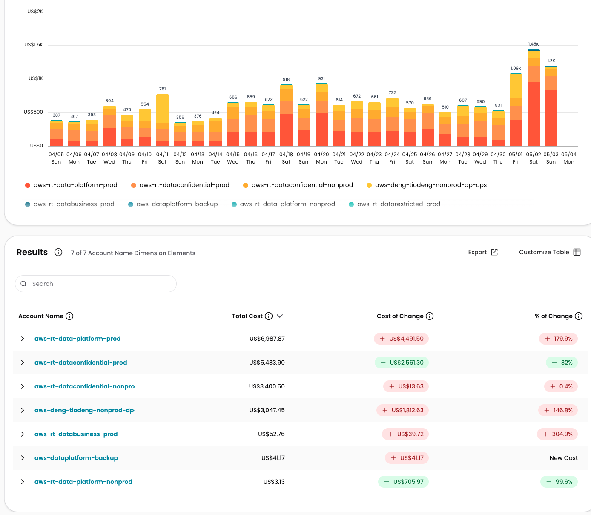 cloudzero-dashboard: AccountName & Service — Cost Centers: Works & Document; Data Foundations | Product: rdp-works | Last 30 days | rdp-works, Cost Centers: Works & Document + Data Foundations; all services; 04/05–05/04; 7 accounts | Total: aws-rt-data-platform-prod $6,987.87 (+179.9%); aws-rt-dataconfidential-prod $5,433.90 (−32%); aws-rt-dataconfidential-nonprod $3,400.50 (+0.4%); aws-deng-tiodeng-nonprod-dp-ops $3,047.45 (+146.8%); aws-rt-databusiness-prod $52.76 (+304.9%); aws-dataplatform-backup $41.17 (New Cost); aws-rt-data-platform-nonprod $3.13 (−99.6%). Daily range $387–$1,450. Spike end of period: 05/01 $1,090; 05/02 $1,450; 05/03 $1,200 | Strong increase — sharp spike in last 4 days of period | CRITICAL aws-rt-data-platform-prod +179.9% (+$4,491.50) is the dominant driver of the late-period spike. CRITICAL aws-deng-tiodeng +146.8% (+$1,812.63). CRITICAL aws-dataplatform-backup appears as "New Cost" — new resource created mid-period. aws-rt-data-platform-nonprod −99.6% may indicate decommission or workload migration. |
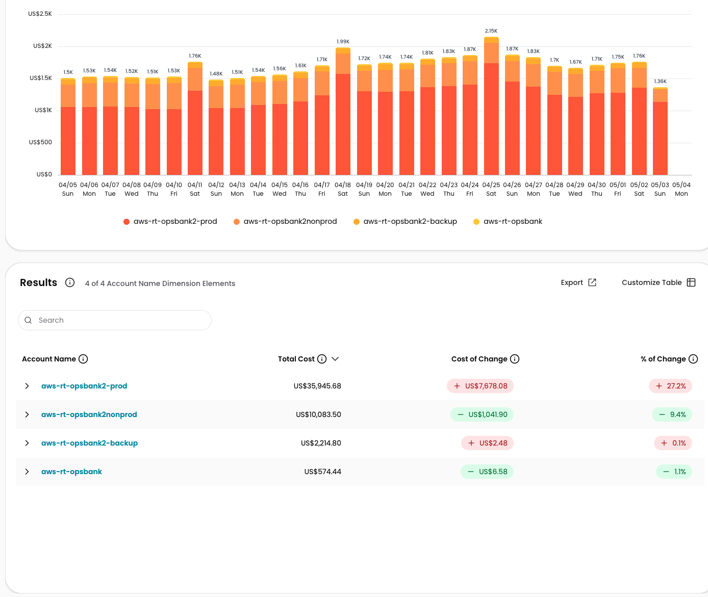 cloudzero-dashboard: AccountName & Service — Cost Center: Sources & OBII | All Products | Last 30 days | Sources & OBII; All products; 04/05–05/04; 4 accounts | Total: aws-rt-opsbank2-prod $35,945.68 (+27.2%); aws-rt-opsbank2nonprod $10,083.50 (−9.4%); aws-rt-opsbank2-backup $2,214.80 (+0.1%); aws-rt-opsbank $574.44 (−1.1%). Daily range $1,360–$2,150. Peak 04/25 at $2,150 | Moderate increase overall; prod account driving +27.2% growth | WARNING aws-rt-opsbank2-prod +27.2% (+$7,678.08) is a significant absolute increase over 30 days. The 04/25 daily spike to $2,150 is ~57% above the period low of $1,360. POSITIVE Nonprod declining −9.4% (−$1,041.90). |
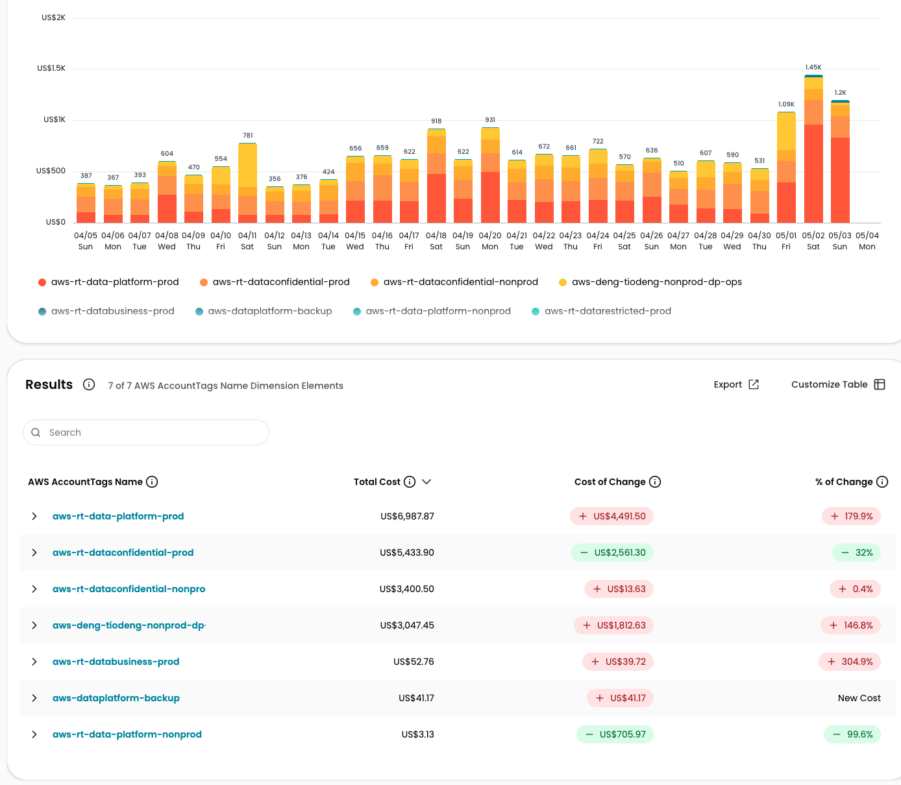 cloudzero-dashboard: AWS AccountTag(Name) & Service — Product: rdp-works | Last 30 days | rdp-works, AWS AccountTag(Name) & Service; 04/05–05/04; 7 accounts | Identical totals to G005: aws-rt-data-platform-prod $6,987.87 (+179.9%); aws-rt-dataconfidential-prod $5,433.90 (−32%); aws-deng-tiodeng-nonprod-dp-ops $3,047.45 (+146.8%); aws-rt-dataconfidential-nonprod $3,400.50 (+0.4%); aws-rt-databusiness-prod $52.76 (+304.9%); aws-dataplatform-backup $41.17 (New); aws-rt-data-platform-nonprod $3.13 (−99.6%). Daily spike 05/02 at $1,450 | Strong increase — same pattern as G005 | WARNING G007 and G005 reflect identical data via different dimension (AccountName vs AccountTag). Confirms late-period spike is real. The same spike (04/05 $387 → 05/02 $1,450) is consistent across both views — not a data artifact. |
| cloudzero-dashboard: AWS AccountTag(Name) & Service — Product: rdp-sources | Last 30 days | rdp-sources, AWS AccountTag(Name) & Service; 04/05–05/04; 7 accounts | Identical totals to G003: aws-rt-data-platform-prod $1,222.36 (+2.5%); aws-deng-tiodeng-nonprod-dp-ops $329.26 (+61.4%); aws-dataplatform-backup $329.87 (−14.8%); aws-rt-data-platform-nonprod $219.52 (−65.2%); aws-rt-dataconfidential-nonprod $115.67 (+118.7%); aws-rt-dataconfidential-prod $4.16 (+41,500%); aws-rt-databusiness-nonprod $2.93 (−88.1%). Daily range $66–$80 | Stable | WARNING Same data as G003 via AccountTag dimension — confirms rdp-sources cost data is consistent across both dimension groupings. aws-rt-dataconfidential-prod entering rdp-sources at +41,500% confirmed as real (not artefact). |
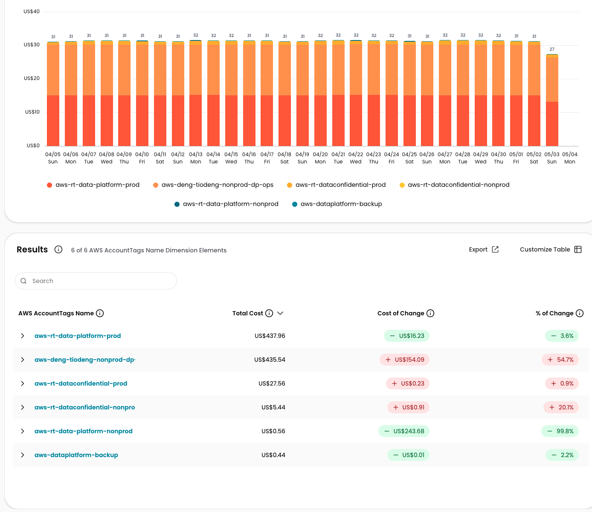 cloudzero-dashboard: AWS AccountTag(Name) & Service — Product: rdp-document | Last 30 days | rdp-document, AWS AccountTag(Name) & Service; 04/05–05/04; 6 accounts | Total: aws-rt-data-platform-prod $437.96 (−3.6%); aws-deng-tiodeng-nonprod-dp-ops $435.54 (+54.7%); aws-rt-dataconfidential-prod $27.56 (+0.9%); aws-rt-dataconfidential-nonprod $5.44 (+20.1%); aws-rt-data-platform-nonprod $0.56 (−99.8%); aws-dataplatform-backup $0.44 (−2.2%). Daily range $27–$32. Very stable | Stable with very slight softening | WARNING aws-deng-tiodeng-nonprod-dp-ops +54.7% (+$154.09) — approaching parity with the top account (data-platform-prod $437 vs $435). POSITIVE Total daily spend very low and stable. aws-rt-data-platform-nonprod near zero (−99.8%) likely decommissioned. |
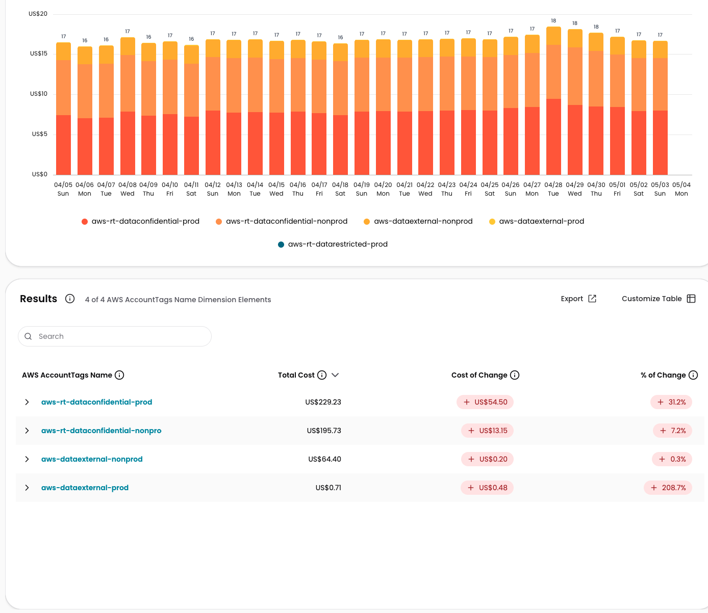 cloudzero-dashboard: AWS AccountTag(Name) & Service — Product: rdp-content | Last 30 days | rdp-content, AWS AccountTag(Name) & Service; 04/05–05/04; 4 accounts | Total: aws-rt-dataconfidential-prod $229.23 (+31.2%); aws-rt-dataconfidential-nonprod $195.73 (+7.2%); aws-dataexternal-nonprod $64.40 (+0.3%); aws-dataexternal-prod $0.71 (+208.7%). Daily range $16–$18. Slight uptick late period ($18 around 04/28–04/30) | Slightly increasing — all accounts showing positive change | WARNING aws-rt-dataconfidential-prod +31.2% (+$54.50) for rdp-content is the largest driver. aws-dataexternal-prod +208.7% though negligible ($0.71 absolute). POSITIVE Overall spend very low ($16–$18/day). |
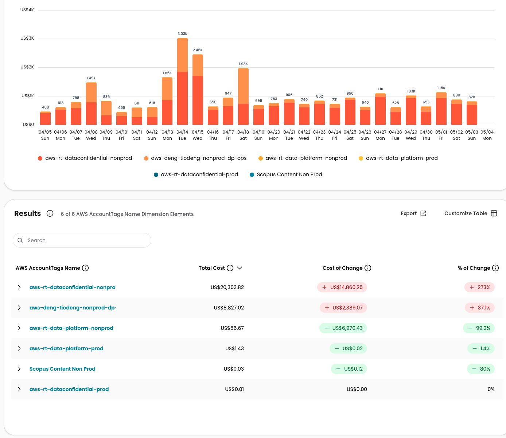 cloudzero-dashboard: AWS AccountTag(Name) & Service — Product: rdp-consumption | Last 30 days | rdp-consumption, AWS AccountTag(Name) & Service; 04/05–05/04; 6 accounts | Total: aws-rt-dataconfidential-nonprod $20,303.82 (+273%); aws-deng-tiodeng-nonprod-dp-ops $8,827.02 (+37.1%); aws-rt-data-platform-nonprod $56.67 (−99.2%); aws-rt-data-platform-prod $1.43 (−1.4%). Daily range $468–$3,030. Spike 04/14 $1.66K → 04/15 $3.03K → 04/16 $2.46K → 04/17 $1.98K | Strong increase — driven by massive nonprod escalation | CRITICAL aws-rt-dataconfidential-nonprod +273% (+$14,860.25) is the most critical finding in this graph. CRITICAL Mid-period spike on 04/14–04/17 reaching $3.03K/day is 6× the period-start baseline of $468. aws-rt-data-platform-nonprod −99.2% may indicate workload migration. |
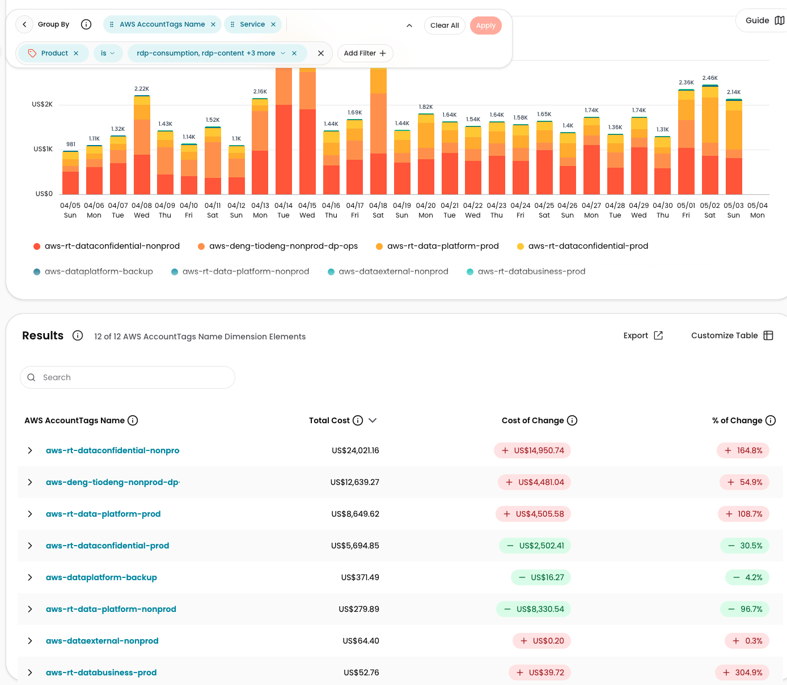 cloudzero-dashboard: AWS AccountTag(Name) & Service — Product: rdp-consumption | Last 30 days (duplicate) | rdp-consumption (duplicate view), AWS AccountTag(Name) & Service; all 5 products applied as filter; 04/05–05/04; 12 accounts | Top totals: aws-rt-dataconfidential-nonprod $24,021.16 (+164.8%); aws-deng-tiodeng-nonprod-dp-ops $12,639.27 (+54.9%); aws-rt-data-platform-prod $8,649.62 (+108.7%); aws-rt-dataconfidential-prod $5,694.85 (−30.5%); aws-rt-data-platform-nonprod $279.89 (−96.7%). Daily range $981–$3.24K | Strong increase, same mid-period spike pattern | WARNING Despite being labeled "duplicate", this view covers all 5 products (not just rdp-consumption) — filter bar shows "rdp-consumption, rdp-content +3 more". Totals are higher than G011. CRITICAL aws-rt-dataconfidential-nonprod +164.8% (+$14,950.74) dominates. CRITICAL aws-rt-data-platform-nonprod −96.7% (−$8,330.54) is a very large drop — likely decommission or migration. |
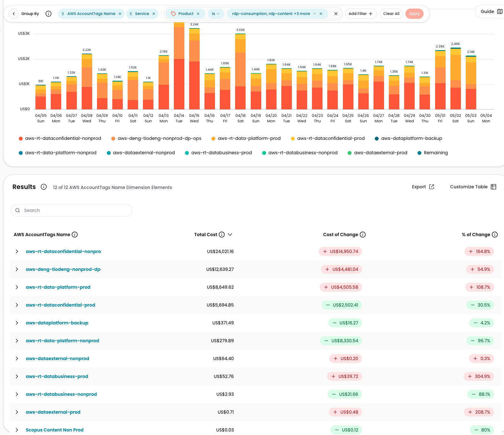 cloudzero-dashboard: AWS AccountTag(Name) & Service — Products: rdp-consumption, rdp-content, rdp-document, rdp-sources, rdp-works | Last 30 days | All 5 products (rdp-consumption, rdp-content, rdp-document, rdp-sources, rdp-works), AWS AccountTag(Name) & Service; 04/05–05/04; 12 accounts | Identical data to G012: aws-rt-dataconfidential-nonprod $24,021.16 (+164.8%); aws-deng-tiodeng-nonprod-dp-ops $12,639.27 (+54.9%); aws-rt-data-platform-prod $8,649.62 (+108.7%); aws-rt-dataconfidential-prod $5,694.85 (−30.5%); aws-dataplatform-backup $371.49 (−4.2%); aws-rt-databusiness-prod $52.76 (+304.9%); aws-rt-databusiness-nonprod $2.93 (−88.1%); aws-dataexternal-prod $0.71 (+208.7%). Daily spike 04/14–04/15 to $3.24K. Late-period elevation: 05/02 $2.46K | Strong increase | CRITICAL G013 and G012 are equivalent views (same filter applied); confirms G012 is NOT a true duplicate of G011. CRITICAL The $3.24K peak on 04/15 is the highest single-day cost across all 13 graphs for this product portfolio. WARNING End-of-period costs ($2.36K–$2.46K on 05/01–05/02) remain well above the period-start ($981 on 04/05). |
Executive Summary
| Category | Finding | Severity |
|---|---|---|
| Overall Pattern | Costs across the RDP product portfolio (rdp-works, rdp-consumption) are significantly elevated in the last 10 days vs. the start of the period. The portfolio-wide daily spend doubled from ~$981 (04/05) to ~$2,460 (05/02). aws-rt-dataconfidential-nonprod and aws-deng-tiodeng-nonprod-dp-ops are the primary growth drivers across nearly all product views. | CRITICAL |
| Largest Movement | aws-rt-dataconfidential-nonprod in rdp-consumption (G011): +273% (+$14,860.25) over 30 days; single-day peak on 04/15 reached $3.03K — approximately 6× the 04/05 baseline of $468/day. | CRITICAL |
| Critical Anomaly | Mid-period spike 04/13–04/17 across rdp-works and rdp-consumption accounts: daily costs surged to $3.03K–$3.24K then partially subsided but never returned to baseline — end-of-period levels remain elevated at $2.14K–$2.46K. Also: aws-rt-data-platform-nonprod dropped −96.7% to −99.8% across multiple product views, suggesting a large-scale decommission or workload migration that may explain some of the cost shift to other accounts. | CRITICAL |
| Data Quality | All 13 images are fully readable. G012 is labeled "duplicate" of G011 but is actually a distinct broader-scope view (all 5 products vs. rdp-consumption only) — the label is misleading. G007/G005 and G008/G003 are verified-consistent cross-dimension pairs. Last-day values (05/04) appear low across all graphs — likely partial-day capture at time of screenshot. | WARNING |
- Immediate: Investigate the 04/13–04/17 spike in aws-rt-dataconfidential-nonprod (rdp-consumption): identify what workload or job drove $3.03K in a single day — check for runaway batch jobs, accidental data replication, or untagged resources. Validate whether aws-rt-data-platform-nonprod decommission (−96.7–99.8%) was intentional and confirm no resources were silently migrated to higher-cost accounts.
- Short-term: Review aws-rt-data-platform-prod in rdp-works (+179.9%, +$4,491.50) and aws-deng-tiodeng-nonprod-dp-ops across rdp-works (+146.8%), rdp-sources (+61.4%), rdp-document (+54.7%), and rdp-consumption (+37.1%) — this account is escalating across every product simultaneously, suggesting an infrastructure change or uncontrolled resource growth. Set budget alerts for aws-rt-opsbank2-prod ($35,945.68, +27.2%) in Sources & OBII.
- Follow-up: Rename or retitle G012 in the dashboard to accurately reflect "All 5 Products" scope (not "rdp-consumption duplicate"). Confirm whether the 05/04 partial-day data for OpsBank2 ($546 vs. typical $700+) is expected or indicates a service disruption. Monitor aws-rt-dataconfidential-prod in rdp-sources flagged at +41,500% to ensure this is not an ongoing ingestion anomaly.